Benoit Mandelbrot: Polish-American (1924–2010)
There are times when a mathematician is largely known for one mathematical discovery. This is the case with the mathematician Benoit Mandelbrot, who was born in Warsaw, Poland, on November 20, 1924, although through his peripatetic life he has held both French and American citizenships. He was always fascinated with geometry. Even as a boy it is said that he saw chess games rather geometrical than logical. Later in life through his innovative publication The Fractal Geometry of Nature,1 he asks, “Why is geometry often described as cold and dry? One reason lies in its inability to describe the shape of a cloud, a mountain, a coastline or a tree.” His primary claim to fame within the realm of mathematics is his development of fractals, a field in geometry comprised of objects in similar patterns with increasingly smaller scales. We will inspect fractals in greater detail after we consider the lifestyle of Mandelbrot, which brought him to these curious discoveries.
Benoit Mandelbrot spent the first eleven years of his life in Poland in a family that was rather academic, his mother being a dentist. However, it was two of his uncles who introduced and motivated him toward mathematics. In 1936, with the rise of Nazism, his family emigrated to France where his uncle, who was a professor of mathematics, took responsibility for Mandelbrot’s education. Studying in Paris at the start of World War II was rather difficult and gave him an opportunity to think about mathematics independently, which allowed him to gravitate further toward geometry. In an attempt to avoid the Nazis, who occupied much of France at the time, he left Paris with his family and continued his studies in Tulle, France. In 1944 he returned to Paris to continue his studies at the Lycée du Parc on Lyon, and from 1945 to 1947 he attended the École Polytechnique. From there he went on to the California Institute of Technology, where, in 1949, he received a master’s degree in aeronautics. He then went back to France to the University of Paris, where he earned a doctorate in mathematics in 1952. Soon thereafter, he left Paris to return once again to the United States, this time to the Institute of Advanced Study at Princeton, where he was mentored by John von Neumann. Once again on the move, in 1955 he went to France to work at the Centre National de la Recherche Scientific, where he met and married Aliette Kagan, and soon the couple moved to Switzerland and then again back to France. Finally, the couple, still mobile, moved back to the United States where he took the position of a research fellow at the IBM Thomas J. Watson Research Center in Yorktown Heights, New York, because Mandelbrot felt uncomfortable with the French style of mathematics study, whereas the IBM environment allowed him greater freedom in exploring mathematics from his geometrical viewpoint. He remained at IBM for the next thirty-five years.
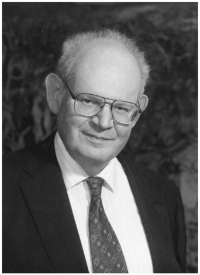
Figure 49.1. Benoit Mandelbrot.
In 1980, with the aid of the computer, Mandelbrot showed that pictures of mathematical objects created in 1918 by the French mathematician Gaston Julia (1893–1978) were quite beautiful, not monstrous as some may have felt. And more importantly, he showed that, rather than pathological, the ragged outlines and the repeating patterns of those figures were often found in nature. (See fig. 49.2 for some examples.) Mandelbrot used the Latin word fractus, meaning broken or fractured, to coin a word to denote the new mathematical objects: fractals.
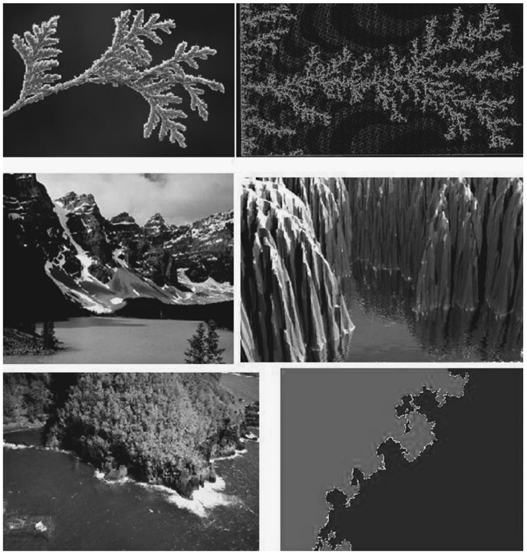
Figure 49.2.
In figure 49.2 the images to the left are pictures of real-life scenes. Those pictures to the right are related fractal models. The characteristic feature of fractals is self-similarity: Geometric patterns seen in the big picture of a fractal are repeated in their parts in smaller and smaller scales. Making fractals involves the repeated application of a geometric rule, or transformation, of an original figure or set of points, which we will refer to as the seed of the fractal.
Once we determine what the generative procedure and the seed of a fractal will consist of, we can begin constructing the fractal by repeatedly applying the generative procedure—first to the seed, then once again to the resulting output, and so on. There lies another definitive aspect of fractal construction: It is made up of consecutive phases called iterations. An iteration is the act of applying one algorithm or procedure one time through in a repetitive process.
When constructing a fractal, the iterations of the generative procedure are done recursively—that is, the input of each iteration is the output of the previous one—with the exception of the first iteration, which is applied to a seed. In some cases, this means that each subsequent iteration will be more cumbersome than the previous one. In those cases, programmable technology is definitely immensely helpful.
A fractal ideally entails the iteration of a procedure an infinite number of times, although in practice we can iterate a procedure only a finite number of times. We can use computers to help us perform as many iterations as we want, which would give us different stages in the construction of a fractal. Or we can use mathematics to deduce what would be the result of performing that infinite process. Let us consider the generative process described above, and the appropriate terminology through a classical example, the Koch Snowflake (fig. 49.3).2
For the construction of this fractal, the seed will be an equilateral triangle. Because the generation of the fractal happens by successive iterations, we will call the result of each iteration a stage in the fractal construction. The generative procedure will consist of erasing the middle third of every line segment (the initiator) in a stage and replacing it with two line segments of the same length (one-third of the length of the original segment) at an angle of 60°; this will form cusps (which look like partial equilateral triangles—the generator), where before there were segments. We can see this procedure illustrated in figure 49.3.
Each iteration will consist of applying the fractal construction procedure to each line segment in a stage of the fractal, which will create the next stage. Figure 49.4 shows the first two iterations in the construction of the Koch Snowflake.
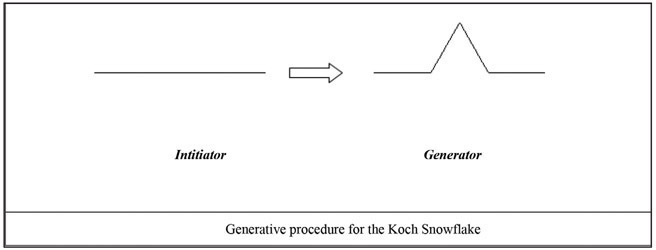
Figure 49.3. Generative procedure for the Koch Snowflake.
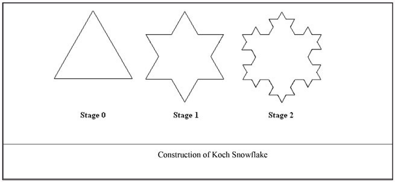
Figure 49.4. Construction of Koch Snowflake.
We can sketch stage 3 of the Koch Snowflake on a separate piece of paper, or use a computer drawing program. Remember this iteration will require applying the generative procedure to every segment in stage 2. It involves quite a bit more work than the previous iteration. While the first iteration consisted of applying the generative procedure to three line segments, in the second iteration that number increased to twelve. In the third iteration we will need to work on forty-eight line segments. That increase in complexity is displayed in figure 49.5. With each iteration, each line segment at a stage will be replaced by four line segments, forming a cusp, in the next stage. So, if we know how many segments there are at a stage, we can find out the number of segments at the next stage by multiplying that number by four. This relation can be written algebraically and recursively as: Sn = 4 × Sn-1 (which just happens to equal 3 ×4n), where Sn is the number of segments at stage n, and Sn-1 is the number of segments at the previous stage.
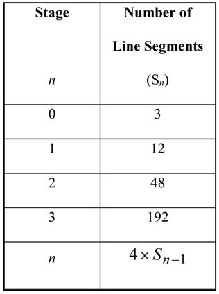
Figure 49.5.
The replacement of each segment by a visual spike, and the accelerating increase in the number of segments in this fractal, is what gives it the main features of a fractal: the jagged appearance and the property of self-similarity. If we zoom in on any spike, we will find smaller and smaller copies of it. Magnifying fractals reveals in them small-scale details similar to the large-scale characteristics.
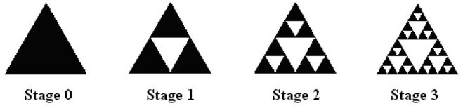
Figure 49.6. Construction of the Sierpiński Gasket.
Another popular fractal is the Sierpiński Gasket (fig. 49.6).3 Its seed is also an equilateral triangle. Each iteration consists of splitting a triangle into four smaller equilateral triangles by using the midpoints of the three sides of the original triangle as the new vertices, then deleting the middle triangle from further action (a quarter of the area is deleted). The construction of the fractal continues by iterating this procedure over and over: From every new triangle formed, a triangle is removed from its interior. This results in not only a rough, fragmented surface, but also in self-similarity—the two main features of fractals.
The Fibonacci sequence has made its way into one of the most well-known fractals: the Mandelbrot set (fig. 49.7). But first, let’s see what the Mandelbrot set is. Its image is so popular it could earn the title of the “emblem of fractal geometry.” Its strange beauty mesmerizes laypeople and experts alike. But what does that image represent? As with the other fractals we have examined, some elements are involved in its construction: a seed, a rule or transformation, and an infinite number of iterations. But unlike our previous examples—which were mainly geometrical—the Mandelbrot set is a set of numbers. The image we see in figure 49.7 is just a plot, in the complex plane,4 of the numbers that belong to the set.
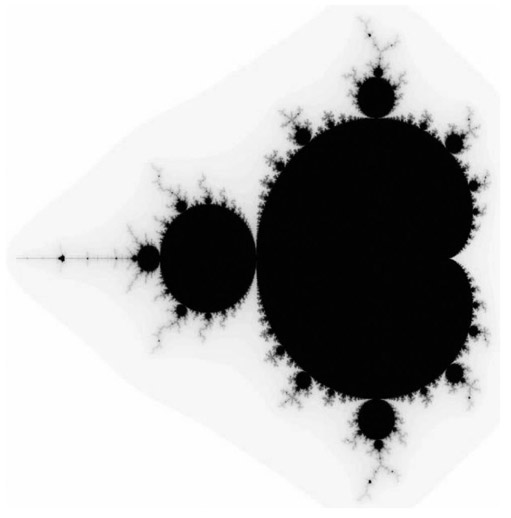
Figure 49.7. The Mandelbrot set.
How do we know whether a number is or is not in the Mandelbrot set? We must test each number to find out. This infinitely large task can only be done with the aid of a computer, and only a finite number of times, although a very large number of times. In fact, it was only under the right conditions, in which Benoit Mandelbrot’s vision and intellect was combined with the environment of IBM’s Watson Research Center, that a revival of work on this set that had been initiated by Julia in the 1920s was made possible.
So the construction of the image of the Mandelbrot set requires one more element besides the seed, the rule, and the iterations that the fractals, previously discussed, also had: It involves a test of numbers. Let us say the number we are testing is c.
The seed for this fractal is the number zero; not a triangle or a segment, but a number, because this fractal is numerical in nature. The rule or transformation is: “square the input and add c,” which can be expressed algebraically as x2 + c.
Suppose we want to test the number c = 1. Our transformation becomes: x2 + 1.
Let us see the result of a few iterations, starting with the seed 0 as the input, and then using the output of each iteration as the input for the next:
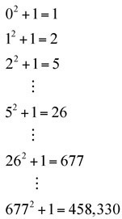
We can see that with more iterations, the greater the result will be. The terms of the sequence of numbers will increase without bound. We say that “it goes to infinity.”
Let us test for another number, c = 0. With this value for c, our rule becomes: x2 + 0.
Starting with the same seed 0, a few iterations will show that the sequence will be fixed at zero:
First iteration: 02 + 0 = 0
Second iteration: 02 + 0 = 0.
As a third example, let us take c = -2, for which the rule becomes: x2 – 2. We start with the same seed -2 and again obtain a fixed sequence after the first iteration:
First iteration: (-2)2 + (-2) = 4 – 2 = 2
Second iteration: 22 + (-2) = 4 – 2 = 2
For each value of c, the “test” (repeatedly iterating the rule) will tell us whether the result will go to infinity, or if it will not. Values of c that will result in an escape to infinity are not in the set; all the others are in the set. The image of the Mandelbrot set is actually a record of the fate of each number, c, under this test.5 The key to understanding the image is to unveil the code used. The most frequently used code for plotting the results of these tests is to use the color black to represent those points in the plane that are in the Mandelbrot set, and to color the others according to their “escape speed”—that is, using different colors to represent the number of iterations that value takes to reach a certain distance from the origin. Another traditional way of plotting the Mandelbrot set is just to use black for points that are in the set and white for those that are not.
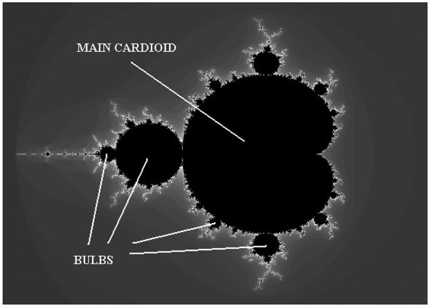
Figure 49.8. The main cardioid and bulbs in the Mandelbrot set.
We will now look at the image of the Mandelbrot set with a categorical eye. At the core of the image, we can see a heart-shaped figure, the main cardioid.6 We can also note many round decorations, or bulbs (fig. 49.8). We call any bulb that is directly attached to the main cardioid a primary bulb. The primary bulbs have in turn many smaller decorations attached to them. Among them, we can identify what appear to be antennas (fig. 49.9).
We will call the longest of these antennas the main antenna. Finally, the main antennas show several “spokes” (fig. 49.10). Note that the number of spokes in a main antenna varies from decoration to decoration. We will call this number the period of that bulb or decoration. To determine the period of that bulb, just count the number of spokes on an antenna. We must remember to count the spoke emanating from the primary decoration to the main junction point. Figure 49.11 displays various primary bulbs and their periods.
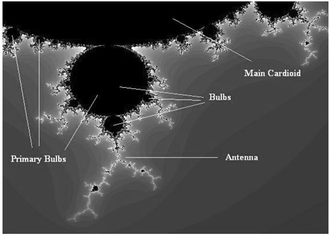
Figure 49.9. Detail of decorations in the Mandelbrot set.
How can the Fibonacci sequence be seen in the Mandelbrot set? We will consider the period of the main cardioid to be 1. Then, by counting the spokes in the main antenna of the largest primary bulbs, we will determine their period. The result of this counting—that is, the period of the main cardioid and of some of the largest primary bulbs, are registered in figure 49.12.
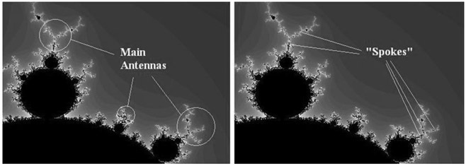
Figure 49.10. Main antennas and their “spokes.”
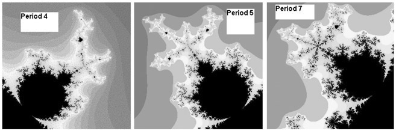
Figure 49.11. Determining the period of bulbs by counting the “spokes” in their main antenna.
It is surprising to see from an inspection of figure 49.12 that the largest bulb between the bulb of period 1 and the bulb of period 2 is a bulb with period 3. The largest bulb between the period-2 bulb and a period-3 bulb is a period-5 bulb. And the largest bulb between a period-5 bulb and a period-3 bulb is a period-8 bulb. Interestingly, the Fibonacci numbers seem to appear. There are no obvious explanations as to why they appear. The Fibonacci numbers are not related directly to the way in which the periods of primary bulbs are calculated. The Fibonacci sequence inexplicably makes a mysterious and remarkable appearance—just another striking feature of fractals.
As well as being an IBM Fellow at the Watson Research Center, Mandelbrot held numerous other academic positions such as Professor of the Practice of Mathematics at Harvard University, Professor of Engineering at Yale, Professor of Mathematics at the École Polytechnique, Professor of Economics at Harvard, and Professor of Physiology at the Einstein College of Medicine in New York. Mandelbrot’s excursions into so many different branches of science were intentional. It was, however, the fact that fractals were so widely found that in many cases, they provided the route into other areas. Mandelbrot also received a multitude of academic honors and prizes, most of which he received in between the years of 1985 and 2003, such as in 1985 he received the Barnard Medal for Meritorious Service to Science, in 1986 the Franklin Medal, in 1987 the Alexander von Humboldt Prize, in 1988 the Steinmetz Medal, in 1989 the Légion d’Honneur and the Nevada Medal, in 1993, the Wolf Prize for Physics, and in 2003 the Japan Prize for Science and Technology, as well as others.
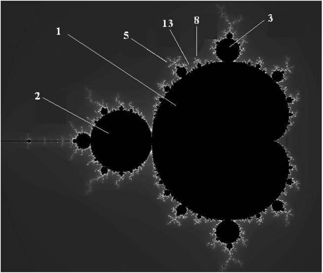
Figure 49.12. The Fibonacci numbers in the Mandelbrot set.
On October 14, 2010, Mandelbrot died of pancreatic cancer in Cambridge, Massachusetts. He was lauded universally not only for his development of fractals, but for his universal intelligence. His obituary in The Economist highlights his fame as “celebrity beyond the academy.”7